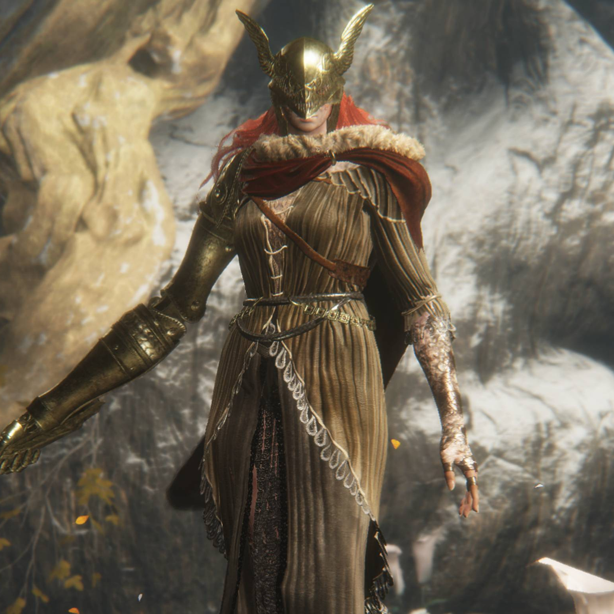
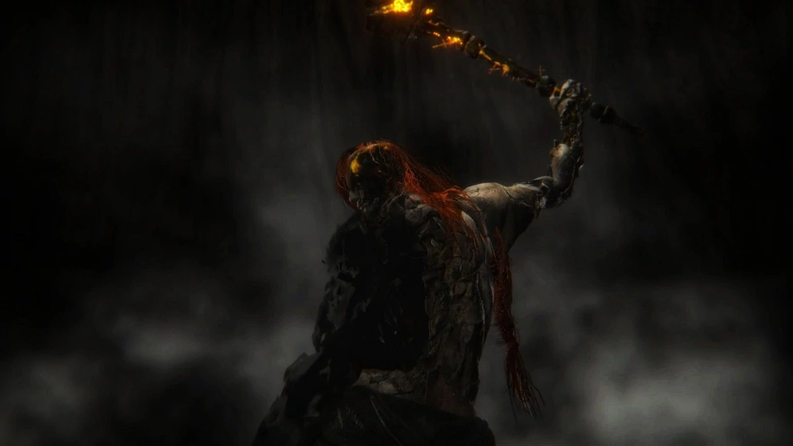

Jag räknar inte med DLC på grund av att jag inte ännu spelat DLC:en.
5. Godrick the Grafted

4. Starscourge Radahn

3. Morgott the Omen King

2. Malenia, Blade of Miquella

1. Radagon of the Golden Order

Detta är de bossarna *jag* tycker har varit roligast att strida mot, så bli inte arg om du inte håller med!